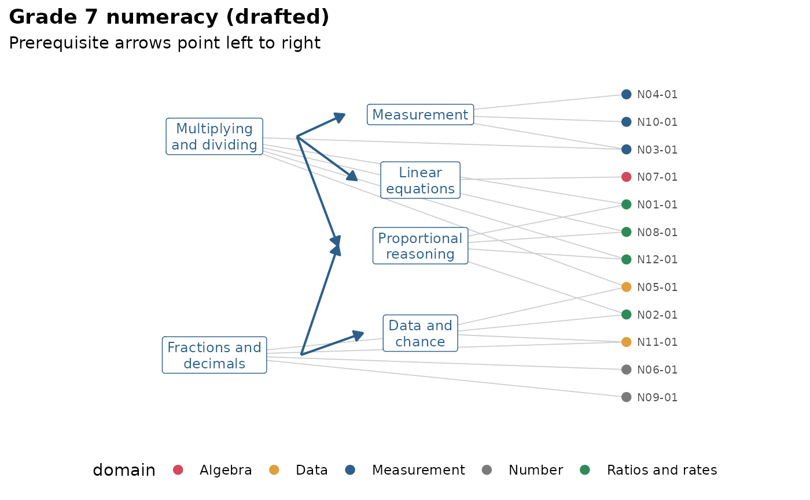

Draft a knowledge graph from item text with a language model
Source:R/kg-extract.R
mv_kg_extract.RdExperimental. Sends the text of the items to a language model and asks it to draft a knowledge graph: Which concepts the items measure, which items measure which concepts, and which concepts are prerequisites of others. The draft is a starting point for people who know the content, not a finished graph, so it comes back with checks already run and every link carrying the model's reason.
Usage
mv_kg_extract(
items,
concepts = NULL,
text = NULL,
id = NULL,
subject = NULL,
n_concepts = NULL,
prerequisites = TRUE,
provider = NULL,
model = NULL,
name = NULL
)Arguments
- items
the items: A data frame with an id column and a text column, an
mv_pipeline()(its items are used), or a knowledge graph whose item metadata has the text (seemv_kg_annotate()); a graph also gives the concepts unlessconceptsis set.- concepts
optional concepts the model must use: A character vector of names, a data frame with
conceptand optionallabelanddescriptioncolumns, or a knowledge graph. Descriptions help the model, so give them when you can.- text
name of the item text column. Defaults to
text, orstemwhen there is notextcolumn. Several columns (for example a stem and its options) are joined.- id
name of the item id column. Defaults to
item, orid.- subject
optional one-line description of the test, such as
"Grade 7 numeracy", to give the model context.- n_concepts
optional number of concepts to aim for when the model proposes them.
- prerequisites
logical; ask for prerequisite edges between concepts.
- provider, model
the language model, as in
mv_ask_setup().- name
optional name of the graph.
Value
An object of class mv_kg_draft, which is also an mv_kg, so
every knowledge graph function accepts it. The item columns other than
the id are kept as item metadata. tidy(draft, "reasons") returns the
model's reason for each link and prerequisite edge, with the
prerequisites' confidence; tidy(draft, "flags") returns the problems
found in the model's answer.
Details
Two uses are supported:
Concepts given: Pass a list of concepts (or a graph whose concepts you want to keep) and the model only links items to them and proposes prerequisites. This is how to draft a Q-matrix for new items, or to get a second opinion on an existing one; compare the two with
mv_kg_compare().Concepts proposed: Leave
conceptsempty and the model also proposes the concepts, with labels and descriptions.
What the model returns is checked before the graph is built, and each
problem becomes a row of tidy(draft, "flags"): Links to items or
concepts that do not exist are dropped, items the model did not link are
listed, prerequisite edges that point both ways keep the one with higher
confidence, and edges that form a cycle are removed, lowest confidence
first, until the prerequisites have a learning order. The usual next
steps are mv_kg_check() for the structure and mv_kg_fit() for
whether response data agree with it.
Only the item ids and text, the concept list and subject are sent to
the model; no response data. To run without a live model, for teaching
or examples, use mv_llm_replay(): The example recordings that come with
mirtverse answer the calls in
system.file("replay", "examples.R", package = "mirtverse").
See also
mv_kg_compare() to compare the draft with an expert graph;
mv_kg_check(), mv_kg_fit() and mv_kg_refine() for the review.
Examples
if (requireNamespace("ellmer", quietly = TRUE)) {
old <- mv_llm_replay() # answer from the recordings that come with mirtverse
# a second opinion on Tatsuoka's Q-matrix, from the text of the 20 problems
draft <- mv_kg_extract(fraction_subtraction_kg,
subject = "Middle school fraction subtraction")
print(draft)
print(tidy(draft, "flags"))
print(mv_kg_compare(draft, fraction_subtraction_kg))
# concepts proposed by the model
items <- itemtext[endsWith(itemtext$id, "-01"), c("id", "domain", "stem")]
draft2 <- mv_kg_extract(items, subject = "Grade 7 numeracy")
print(gg_kg(draft2, colour = "domain"))
options(old)
}
#> Language model calls now answer from examples.json (26 recorded requests).
#> <mv_kg_draft> (EXPERIMENTAL) Drafted by recorded responses from the concepts given
#> <mv_kg> Fraction subtraction (Tatsuoka) (drafted): 8 concept(s), 20 item(s)
#> Edges: 7 prerequisite, 0 related, 54 measures
#> Item metadata: text
#> Learning order (by prerequisite depth):
#> 0: convert_whole, separate_whole, simplify_first, subtract_numerators
#> 1: common_denominator, borrow_whole, reduce_answer
#> 2: column_borrow
#> Checks on the model's answer: 5 flag(s)
#> * [review] unknown_item: The model linked FS21, which is not one of the
#> items; the link was dropped.
#> * [review] unknown_concept: FS13 was linked to find_common_denominator,
#> which is not a concept; the link was dropped.
#> * [review] two_way: The model gave the prerequisite both ways between
#> simplify_first and reduce_answer; simplify_first -> reduce_answer was
#> kept (higher confidence).
#> * [review] cycle: The prerequisites formed a cycle through
#> subtract_numerators, borrow_whole, column_borrow; column_borrow ->
#> subtract_numerators (confidence 0.3) was removed.
#> * [info] new_concept: The model proposed a new concept,
#> subtract_whole_numbers; it was left out because the concepts were
#> given.
#> Review the draft with mv_kg_check() and check it against data with mv_kg_fit().
#> # A tibble: 5 × 4
#> check level nodes message
#> <chr> <chr> <chr> <chr>
#> 1 unknown_item review FS21 The mo…
#> 2 unknown_concept review FS13, find_common_denominator FS13 w…
#> 3 two_way review simplify_first, reduce_answer The mo…
#> 4 cycle review subtract_numerators, borrow_whole, column_borr… The pr…
#> 5 new_concept info subtract_whole_numbers The mo…
#> <mv_kg_compare> Fraction subtraction (Tatsuoka) (drafted) vs Fraction subtraction (Tatsuoka)
#> Item links: 53 of the 56 reference links are in the graph (recall
#> 0.95), and 53 of the graph's 54 links are in the reference (precision
#> 0.98).
#> 16 of 20 items are linked to exactly the same concepts.
#> Items that differ: FS01 (missing column_borrow), FS04 (missing
#> borrow_whole), FS08 (extra reduce_answer), FS13 (missing
#> common_denominator).
#> Prerequisites: The graph has 7; the reference has none to compare with.
